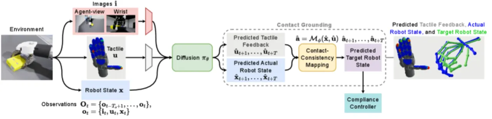
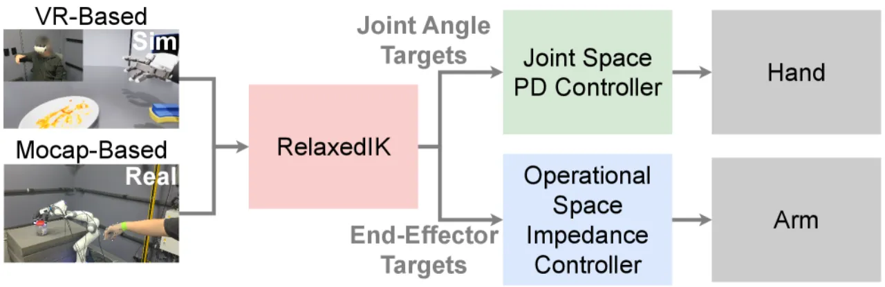
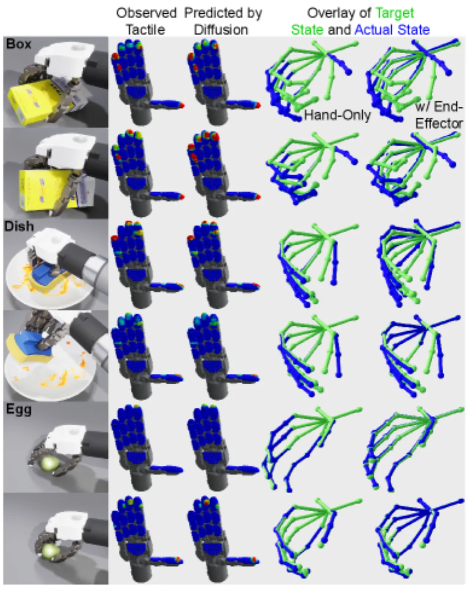
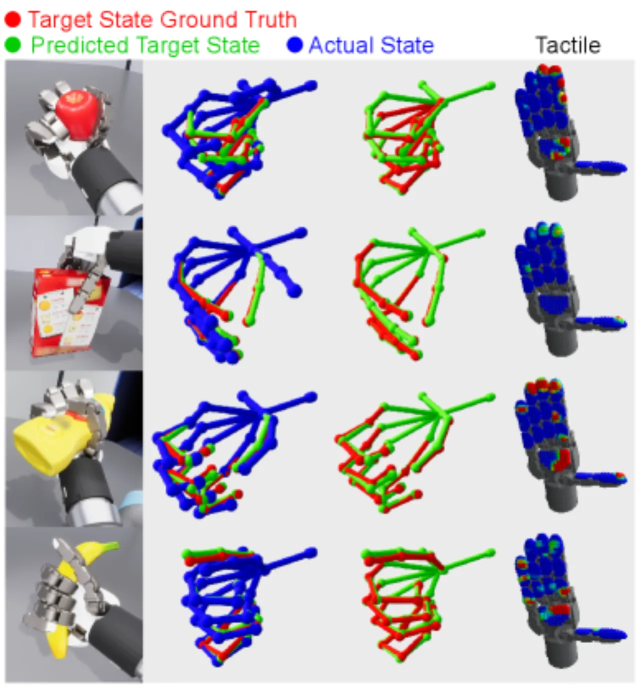
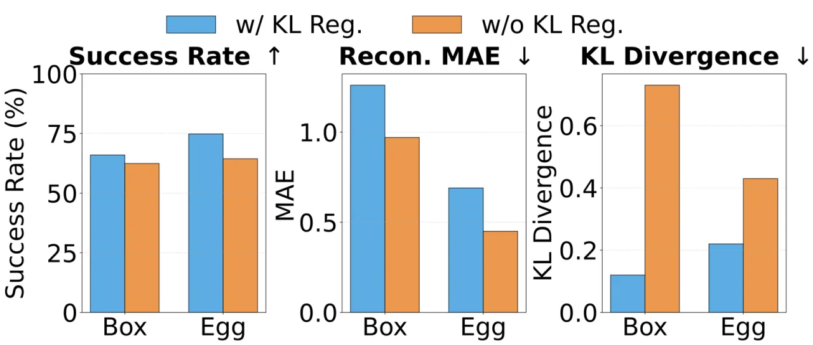
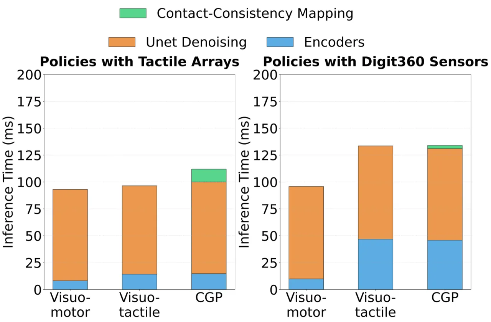

本文提出 Contact-Grounded Policy（CGP）——一种面向灵巧接触丰富操作任务的视触觉策略学习框架。 CGP 通过联合预测机器人实际状态与触觉反馈的耦合轨迹，并利用学习到的 contact-consistency mapping 将预测结果转化为兼容柔顺控制器的可执行目标状态， 从而实现对演化中多点接触的显式"锚定"，而非仅将触觉信号用作辅助观测。
灵巧操作需要对高维、动态变化的多点接触进行持续调控。现有方法在处理接触丰富任务时均存在明显短板： 以抓取为中心的流水线在完成抓取后限制了手指运动；强化学习面临繁琐的奖励工程与 sim-to-real 迁移难题； 模仿学习虽可扩展，但在接触丰富任务上表现不佳。
"Policies must go beyond using tactile signals as additional observations and instead model contact state and how action outputs interact with low-level controller dynamics."
—— 论文第 I 节，Introduction

| 策略范式 | 可执行接触建模 | 多指手支持 | 分布式接触可扩展性 |
|---|---|---|---|
| Adaptive Compliance Policies | ✓ | 受限（单末端执行器） | ✗ |
| Sparse Fingertip Force Policies | ✗ | ✓ | 有限 |
| Contact-Grounded Policy (CGP) | ✓ | ✓ | ✓ |
CGP 将灵巧操作建模为一个接触锚定问题。核心思路是：在特定触觉传感器与柔顺控制器配置下， 接触状态可由三元组 (实际机器人状态 x，触觉反馈 u，控制器参考目标 a) 隐式表达， 无需显式建模接触位置或接触模式。 策略由两个耦合模块组成：contact-consistency mapping 与条件轨迹生成器（diffusion-based）。

该映射将（实际机器人状态 xt，触觉反馈 ut）映射为柔顺控制器可执行的目标状态 at：
at = Mφ(xt, ut)
采用残差映射（输出当前实际状态的偏移量而非绝对目标）以改善条件化效果与鲁棒性。 触觉编码器使用 ResNet 风格架构（优于 MLP 和 Transformer 变体）。 该映射以纯数据驱动方式学习，灵活适配分布式演化多点接触。
使用带 KL 正则化的变分自编码器（VAE）将原始触觉观测压缩为紧凑的潜在表示： 仿真中触觉阵列压缩至 32 维，真实硬件的 Digit360 传感器压缩至 80 维（每传感器 20 维）。
耦合扩散模型（Coupled Diffusion）在潜在空间中联合预测未来的机器人状态轨迹与触觉潜在状态轨迹， 采用 DDPM/DDIM 训练与采样。预测视野 T=16 步，执行视野 Ta=8 步，以滚动时域方式执行。
KL 正则化虽略微提升重建误差，但能产生更紧凑、更结构化的潜在空间， 显著改善基于扩散的预测稳定性和下游策略性能。
实验涵盖 5 个接触丰富的灵巧操作任务（3 个仿真 + 2 个真实），并与两条基线进行对比： Visuotactile DP（视触觉 diffusion policy）和 Visuomotor DP（纯视觉 diffusion policy）。 仿真任务在最后 5 个 checkpoint 上各评估 250 条轨迹（取均值），真实任务各评估 15 条连续轨迹。
| 任务 | Visuomotor DP | Visuotactile DP | CGP（本文） |
|---|---|---|---|
| In-Hand Box Flipping（仿真） | 53.2% | 58.0% | 66.0% |
| Fragile Egg Grasping（仿真） | 53.2% | 70.0% | 74.8% |
| Dish Wiping（仿真） | 42.4% | 43.6% | 58.4% |
| Jar Opening（真实） | 73.3% | 66.7% | 93.3% |
| In-Hand Box Flipping（真实） | 60.0% | 60.0% | 80.0% |
DP = diffusion policy。仿真任务报告最后 5 个 checkpoint 在 250 条轨迹上的平均成功率；真实任务报告 15 条连续轨迹的成功率。

使用 150 条遥操作抓取演示（4,114 帧，11 个物体）在仿真中进行独立测试， 数据以 1:1 的激进划分策略在 episode 层面切分以避免数据泄漏。 结果显示：同时输入机器人实际状态与触觉反馈的预测精度远优于任一单模态输入， 验证了接触锚定假设。ResNet 风格触觉编码器优于 MLP 和 Transformer 变体；残差映射优于绝对位置预测。


图 7 报告了在 NVIDIA A100 80GB GPU 上，50 次推理运行的平均时延。 尽管 CGP 需要额外建模未来触觉反馈和接触一致目标， 其推理延迟与 visuomotor 和 visuotactile diffusion-policy 基线相当， 满足 5 Hz 实时推理要求（8步 DDIM 降噪）。

"The contact-consistency mapping relies on tactile observations and is learned under a particular compliance controller, so it does not readily transfer across sensor types or controller configurations." 具体而言，CGP 为每种传感器从头训练，更换传感器类型需要重新训练或适配， 跨传感器和跨控制器的接触锚定仍具挑战性。
当前评估通过独立的仿真实验和真实部署分别进行，而非直接的 sim-to-real 迁移。 真实触觉传感器（Digit360 视觉触觉传感器）与仿真中的力阵列在传感原理上存在根本差异， 使得直接迁移困难。论文将仿真与真实训练分离，未验证仿真预训练是否能有效迁移至真实。
当前方法验证了接触锚定在单个任务上的有效性， 但未探索跨具有不同目标和接触模式的任务之间的迁移能力。 论文建议未来方向之一是通过跨任务联合训练扩展到更广泛的任务分布。